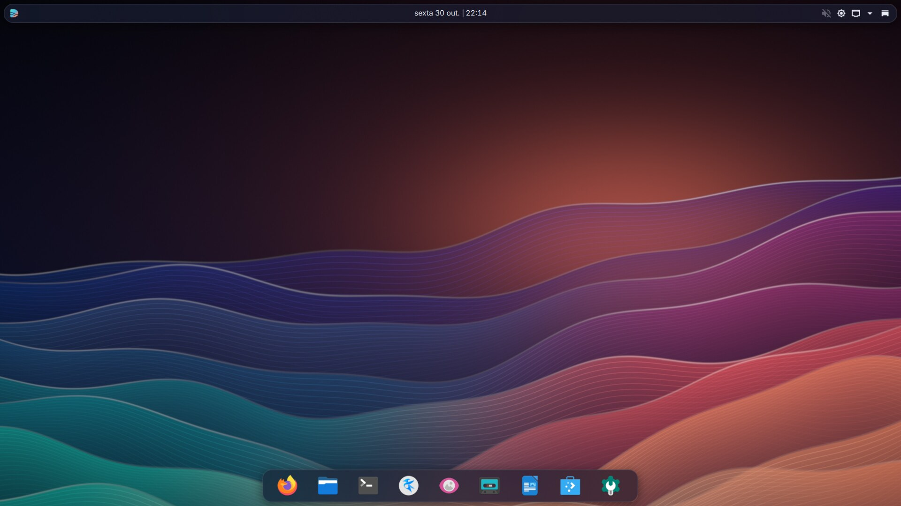
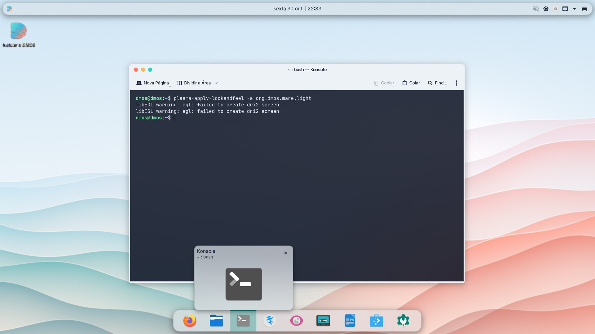

Wallpaper "Maré"
Ondas procedurais em 4K, em versão clara e escura, geradas em Python.
art/gen_wallpaper.py
Versão 1.0 · "Maré" · Debian 13 trixie
O DMOS é uma distribuição baseada no Debian 13, com KDE Plasma 6 e uma identidade visual desenhada de raiz, do menu de arranque ao ambiente de trabalho. Tudo gerado a partir do código, sob licença livre.


Identidade visual
Cada ecrã que vê ao usar o DMOS tem o mesmo desenho. As peças são geradas por scripts no repositório, por isso podem ser revistas e alteradas como qualquer outro código.
Ondas procedurais em 4K, em versão clara e escura, geradas em Python.
art/gen_wallpaper.py
Esquemas de cores, estilo translúcido, decoração de janelas e cores do Konsole.
art/gen_theme.py
Uma disposição limpa, com relógio ao centro e as aplicações principais à mão.
look-and-feel/org.dmos.mare.dark
Tema do GRUB próprio, para BIOS e UEFI, com as entradas em português e inglês.
bootloaders/grub-pc
Um ecrã Plymouth com o logótipo, para o tempo entre o menu e o início de sessão.
plymouth/themes/dmos
Ecrã do SDDM e o instalador Calamares com a marca e as cores do DMOS.
sddm/themes/dmos · calamares
Fontes Inter e JetBrains Mono · Ícones Papirus · Cursor Bibata
Galeria
Capturas tiradas da ISO a correr numa máquina virtual. Clique numa imagem para a ampliar.
O que vem incluído
Um conjunto de aplicações para o dia a dia, em português, com suporte para Flatpak para instalar o resto.
Experimentar
A sessão live entra sozinha com o utilizador dmos. Para instalar, use o ícone Instalar o DMOS no ambiente de trabalho.
A ISO é demasiado grande para o GitHub, por isso ainda não há uma descarga pública. Compile-a a partir do código: fica em dist/dmos-1.0-mare-amd64.hybrid.iso, com o checksum em dist/SHA256SUMS.
VirtualBox, VMware ou Hyper-V, tipo Linux/Debian 64 bits. Pelo menos 4 GB de RAM e 2 CPUs. Ative a aceleração 3D, se existir.
Grave a ISO com o Rufus em modo DD, ou com o balenaEtcher. A gravação apaga o conteúdo da pen.
Estado
Todos os testes foram feitos em QEMU, sem aceleração por hardware.
| Teste | BIOS | UEFI |
|---|---|---|
| Menu de arranque com o tema | Sim | Sim |
| ISO até ao ambiente de trabalho (Wayland) | Sim | Sim |
| Instalação completa e arranque do sistema instalado | Sim | Sim |
Também verificados: tema claro, entrada "Try DMOS (English)", Firefox e Dolphin.
apt.Compilar a ISO
O script cria uma instância WSL 2 própria, dmos-builder, sem tocar nas outras. Precisa de cerca de 20 GB livres e demora perto de 20 minutos, mais a descarga dos pacotes na primeira vez.
git clone https://github.com/diogomadail1000-ship-it/DMOScd DMOS.\build.ps1.\build.ps1 cleanwsl --unregister dmos-builderPara desenvolver o tema sem compilar a ISO, veja scripts/dev_preview.sh no README.
O código e os temas estão sob a GPL-3.0-or-later. O wallpaper "Maré" está sob a CC BY-SA 4.0. O Debian, o KDE Plasma e as restantes aplicações mantêm as licenças próprias.